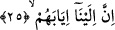

Fethu’r-Rahman’da ifâde edildiğine göre burada sözü edilen “en büyük azap”
Cehennem azabıdır. “En küçüğü” ise kâfirlerin bu dünyada çektikleri aç kalma,
savaşlarda esir düşme, katlolunma gibi azaplardır. Nitekim Fethur Rahman’ın bu
sözünü Rağıb Isfahânî’nin şu âyeti tefsir ederken ileri sürmüş olduğu görüşleri
desteklemektedir. “Fakat biz büyük bir şiddetle yakalayacağımız gün kesinlikle
intikamımızı alırız.” (Duhan, 44/16)
Rağıb Isfahânî bu âyete yer verdikten sonra şöyle diyor: “Bu âyet-i kerimede kâfirin
âhiretten önce bu dünyada ve berzah aleminde görecek olduğu azapların tümünün âhiret
günü görecek olduğu azabın yanında çok küçük kalacağına dikkat çekilmektedir.”
Nitekim bir başka âyet-i kerime aynı gerçeğe şöyle işâret ediyor: “En büyük azaptan
önce, onlara mutlaka en yakın azaptan tattıracağız. Olurki (îmana) dönerler”
(Secde, 32/21) Buradaki “en yakın azap”tan maksad dünyadaki en küçük azaptır. Yoksa
berzahta görülecek azap değildir. Çünkü Allah âyetin devamında “olurki (îmana)
dönerler.” (Secde, 32/21) dönerler buyuruyor. “Dönme” öldükten sonra berzah
aleminde değil sâdece dünya hayatında geçerlidir. Şu halde âyet-i kerimedeki “en büyük
azap” ifâdesinden maksad âhiret azabı olmuş olur. Nitekim “En büyük ateşe girecek
olan kötü kimse ise öğütten kaçınır.” (A’la, 87/12) âyet-i kerimesinde buna işâret
olunmaktadır.
et-Te’vilat en-Necmiyye’de “en büyük azap” ifâdesinden maksadın dünyada istitar
azabı âhirette ise hicran ateşinin azabı olduğu ifâde olunmaktadır.
25. Şüphesiz onların dönüşü sâdece Bize’dir.
Bu ifâde o kâfirlerin en büyük azap ile neden azaplandırılacaklarının sebebini
belirtmektedir. Bu âyette geçen “iyab” dönmek anlamınadır. Buna göre âyet-i kerimeye
mânâ vermek gerekirse şöyle deriz: Şüphesiz onların ölmek ve öldükten sonra dirilmek
sûretiyle dönüşleri sâdece Biz’edir. Ne başlı başına ne de ortak olarak Biz’den başka
hiç kimseye değildir. Nitekim bu gerçeğe Allah bir başka âyet-i kerimede şu şekilde
işâret buyuruyor: “Dikkat edin, bütün işler sonunda Allah’a döner.” (Şura, 42/53)
Okuduğumuz âyet-i kerimede “ileyna” ifâdesinin önce getirilmesi ifâdeye tahsis,
mubalağa katmaktadır. Çünkü bu ifâde şu anlamı vermektedir: Onların dönüşleri sâdece
ben Cebbar’a, intikama kadir olan yaratıcıyadır. Nitekim ilk başlangıçları ve ortaya
çıkışları Ben’den olduğu gibi.
Bu âyet-i kerimede şiddetli bir korkutma unsuru vardır. Çünkü günahlarında ısrarlı ve
isyan eden kulun kendisine gazab eden mâlikine dönüşü son derece zor ve çok çetin bir
sonuçtur.
Âyetteki ve bundan sonraki âyette yer alan zamirin “onlar” şeklinde çoğul getirilmesi
“men” ism-i mevsul’ünün mânâsının dikkate alınmış olmasından dolayıdır. Nitekim